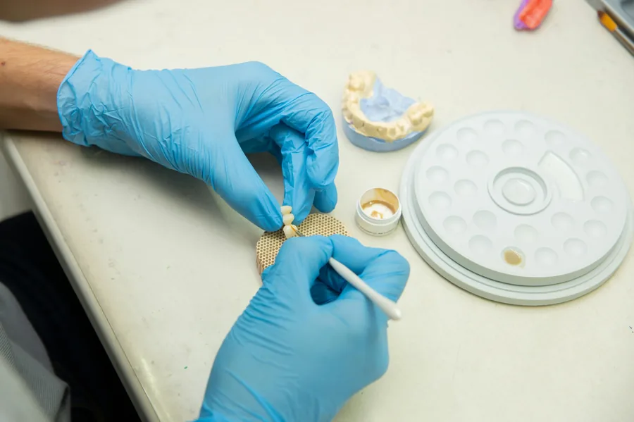
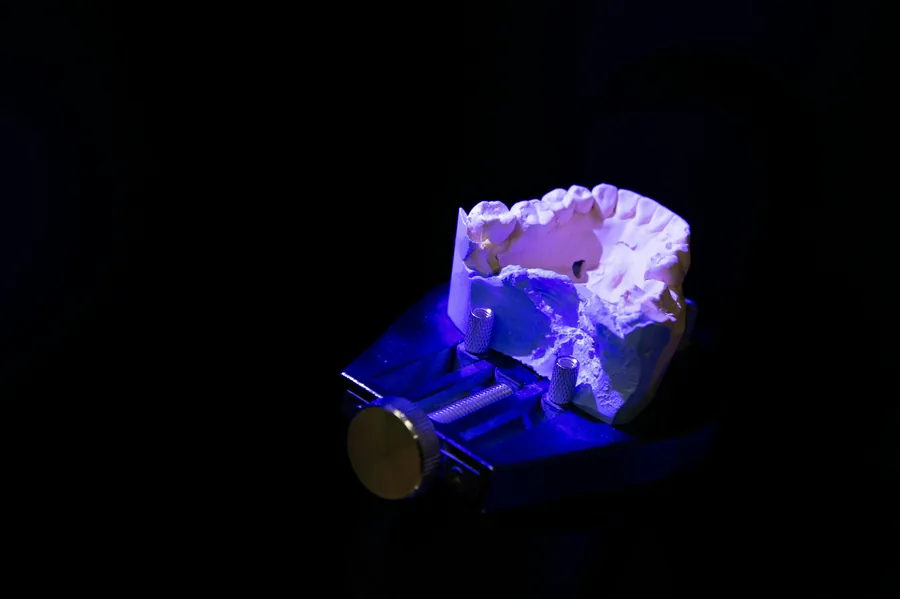
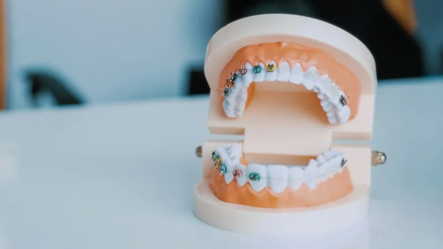

O pracowni
Precyzja, która daje lekarzowi spokój.
W Labor-Tech każdy przypadek prowadzimy etapowo: brief, realizacja, kontrola i odbiór. Cel jest prosty: przewidywalny efekt kliniczny bez zbędnych korekt.

Jak pracujemy
Pracujemy w jasnym modelu B2B. Od razu doprecyzowujemy kluczowe parametry, aby skrócić czas decyzji po stronie gabinetu.
- UstalenieZakres, estetyka, termin i sposób przekazania.
- KontrolaPraca etapami i weryfikacja kluczowych punktów.
- OddanieGotowa praca + jasna informacja o ewentualnych korektach.
Co jest dla nas ważne
Trzy priorytety Labor-Tech: dopasowanie, estetyka i komunikacja techniczna.


Zaufanie i rozwój
Certyfikaty i szkolenia
Doskonalimy warsztat poprzez szkolenia i certyfikaty z zakresu ceramiki dentystycznej, technik cyfrowych i nowoczesnych rozwiązań protetycznych.
Część starszych certyfikatów wystawiono na wcześniejsze nazwisko: Anna Piech.